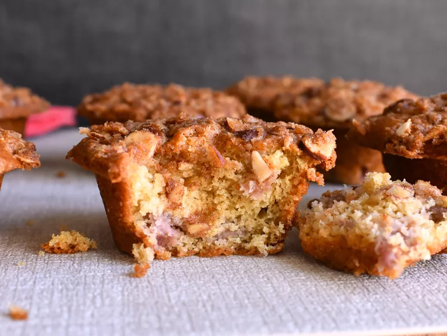

This recipe is a great way to use up that frozen rhubarb in your freezer, but you can also use fresh rhubarb. It makes a moist and tangy muffin.
Preheat the oven to 350 degrees F (175 degrees C). Grease a 12-cup muffin tin, or line with paper liners.
Stir yogurt, 2 tablespoons of melted butter, oil, and egg together in a medium bowl. Stir flour, 3/4 cup of brown sugar, baking soda, and salt in a medium bowl. Pour butter mixture into flour mixture; mix until just blended. Fold in rhubarb. Spoon into the prepared muffin tin, filling cups at least 2/3 full.
Stir 1/4 cup of brown sugar, cinnamon, nutmeg, almonds, and 2 teaspoons of melted butter together in a small bowl. Spoon on top of each muffin, and press down lightly.
Bake in the preheated oven until the tops spring back when lightly pressed, about 25 minutes. Cool in the pan for about 15 minutes before removing.